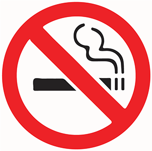
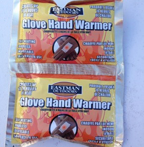

Module: Management of Raynaud’s Phenomenon, Finger Ulcers, Calcinosis, and Skin Involvement
Deborah McCloskey, RN, BSN; Janet L. Poole, PhD, OTR/L Cindy Mendelson, PhD, RN, and; Dinesh Khanna, MD, MS
Resources
Raynaud’s travel kit
Use this printout to prepare a travel kit to stay warm or at least to protect your hands when you are out.
Printout PDFSo what can I do to reduce Raynuad’s symptoms?
Don’t smoke!

- Nicotine reduces blood flow in the blood vessels that go to the arms, hands, legs, and toes and increases the risk of developing fingertip sores.
Reduce exposure to cold and protect yourself when exposed.

- Be aware of outdoor weather conditions. Be prepared.
- Consider seasonal changes and temperature fluctuations.
- Anticipate air conditioning. Bring a sweater.
- Wear gloves or even oven mitts to remove cold food from the freezer or refrigerator
- Do not hold frozen items or put hands in cold water.
- Plan for the frozen food aisle at the supermarket; bring gloves.
- Warm your car or have someone else warm it to a comfortable temperature before driving. Use a cover on the steering wheel (lambswool) and/or gloves.
- Consider investing in heated vests if you have to spend time outdoors. Use hand and foot warmers tucked into mittens and boots.
- Keep extra blankets, gloves/mittens, and socks in your car for emergencies
Keep warm.

- Dress in layers.
- Dress warmly in cooler weather or during seasonal changes.
- Maintain central body warmth; wear vests.
- Wear hats to decrease the amount of body heat lost.
- Wear mittens rather than gloves.
- Use chemical or battery-powered warming devices.
- Use thermal cups and can covers.
- Wear socks or booties for insulation and protection.
- Wear socks and mittens to bed, if needed.
Medications
The purpose of taking medications for Raynaud’s is to open the blood vessels.
- Calcium channel blockers, such as nifedipine, have been found to be useful in opening blood vessels in the skin and heart.
- Antiplatelet therapy, such as low-dose aspirin, can be helpful in thinning the blood, thereby allowing it to flow better through partly narrowed vessels.
- Fluoxetine (Prozac®) has also been shown to be effective in RP in a small clinical trial, and is sometimes used in people with lower blood pressure or when RP is triggered by anxiety.
When taking medications:
- Take medications as directed to improve blood flow.
- Be aware of potential side effects. Report them to your doctor promptly.
- Evaluate the presence or absence of any positive effects. Be prepared to discuss the effects of the medications with your health care professional.